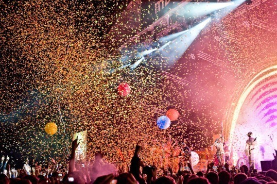
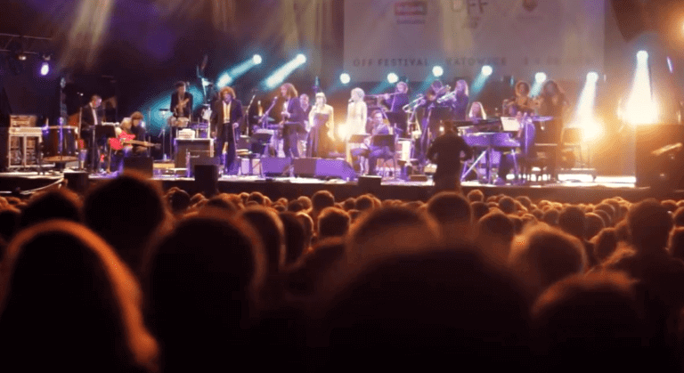
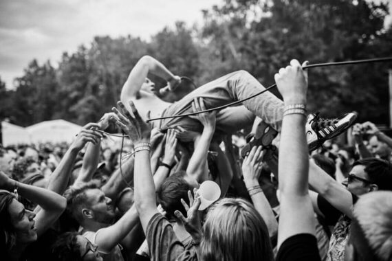

OFF Story
-
1972
A true milestone in music history: My first scream!
-
1972
A true milestone in music history: My first scream!
-
1979
The brother of one of my swim club buddies plays me “Another Brick in the Wall.” I become obsessed with Pink Floyd.
-
1984
I officially announce myself as a Pink Floyd fan in a letter to the youth magazine Na przełaj. I start taping every album broadcast on the radio shows “Wieczór płytowy” and “Romantyki Muzyki Rockowej.”
-
1985
I become the Polish junior freestyle swimming champion, and my friends are jealous of my tape collection. I listen to Venom, OMD, Art Garfunkel, and Run DMC.
-
1992
I start a band and call it Myslovitz, because I'm from Mysłowice.
-
2006
I play music from my tape collection at full blast: My wife Anka and I organize the first OFF Festival. A hodgepodge of genres, combined with whiplash shifts in eras and sounds? Let's do it. Breaking molds and setting new trends? Yes, please. We don't know the first thing about running a festival, so we just focus on the bands instead of thinking about water, food, accommodation, transportation, or bathrooms. The lineup features Lech Janerka, Maria Peszek, Lenny Valentino (reunited just for the occasion), and The White Birch. Ten thousand people show up to see them play.
-
2007
Our attic room at 3:00 am. We put our son to bed and get to work organizing the second edition of the festival.
-
2009
The fourth edition! We bid a spectacular goodbye to Mysłowice with performances by The National and Spiritualized. The lineup has a bit of everything: folk, noise, punk, indie, jazz, metal, rap. To this day, OFF remains Poland's most eclectic festival.
-
2010
An epic welcome in Katowice. The sheer excitement of the festival is enough to make the Flaming Lips' vocalist levitate. Encapsulated in an air-filled plastic bubble, Wayne Coyne surfs the sea of audience members amassed in front of the stage.
 -
2011
We don't do this for the praise, but recognition is always nice. OFF wins the prestigious European Festival Award!
-
2013
We play matchmaker and combine opposites. Our thinking goes: If two things don't pair well, then maybe they'll play well? We match Mitch & Mitch with Zbigniew Wodecki, and create an ingenious new musical project.
-
2014
Ask anyone who knows me and they'll agree: Artur Rojek is not exactly the life of the party. Until this year, that is. Together with Barry Hogan of ATP and Fra Soler of Primavera Sound, I man the decks at the OFF Before party. The brilliant band Slowdive performs on the Main Stage, and TIME Magazine puts us on its list of the world's 14 best music festivals.
-
2015
OFF launches a partnership with the cult American radio station KEXP. The Seattle broadcaster records video sessions on location at the Porcelain Factory and the historical neighborhood of Nikiszowiec, bringing the city of Katowice and Polish bands like Hańba! and Coals to a global audience.
-
2016
Everything was going so well — until now. This is the most jinxed festival in OFF history. It starts with cancellations by The Kills, GZA, Anohni, and Zomby. Then Mudhoney lose their guitars on their way to Katowice, and the same happens to the traditional outfits of The Master Musicians of Joujouka. Islam Chipsy and Thundercat save the day, along with Ata Kak, whose performance launches the Experimental Stage into the sky. What doesn't kill us makes us stronger.
-
2017
We make it onto the Guardian's list of the 10 best festivals in Europe!
-
2019
My dream comes true: Stereolab and the Śląsk Song and Dance Ensemble accept my invitation. And another dream: We reduce the OFF Festival's carbon footprint by teaming up with the Gliwice-based studio SOKKA to create a festival gate that doubles as a recycling center.
-
2020
This year's lineup exclusively features the Covid-19 Pandemic. We miss the music.
-
2021
We take it easy this year. Audiences join us at the OFF Country Club, a laid-back event with Polish artists. But we're still here!
-
2022
This is an exceptional year! We're turning 15 and we just can't wait for summer vacation. We're still that teenager who listens to music all day and shares their most obscure discoveries with their friends. We're driven by passion and the sense that there's still so much to discover in this world. Iggy Pop is playing for us this year; Bikini Kill will knock you onto the grass, you'll go crazy for Metronomy and Yard Act, and fall in love with Q!
OFF has grown into something of an oasis for those sick and tired of standard hierarchal line ups, crap food, and profit over passion gatherings. Clash Music (UK)
One of the best-curated festival experiences in Europe, and anybody who makes the trip to Katowice in south-west Poland won't be disappointed. Built as a coal mining town, Katowice is at the heart of a larger metropolitan area in the southwest corner of Poland. The city itself though is anything but intimidating. A soft blend of concrete brutalism sits alongside a vast range of gothic and classical architecture, giving the city a uniquely broad visual personality amongst Polish cities. It makes for a lovely city break away, sampling beer and pierogi on Mariacka street, visiting the excellent art museums, touring the mines. Drowned in sound (UK)